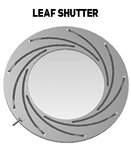
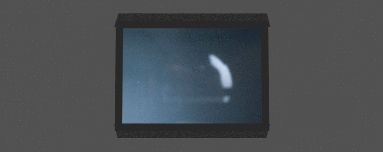

Устройство для регулирования выдержки, то есть длительности воздействия света на фотоматериал или матрицу фотоаппарата. Один из двух основных инструментов управления экспозицией.
Интервал времени, в течение которого свет экспонирует матрицу. Одна из двух составляющих экспозиции.
Ряд стандартных выдержек меняет экспозицию в два раза: 1 · 1/2 · 1/4 · 1/8 · 1/15 · 1/30 · 1/60 · 1/125 · 1/250 · 1/500 · 1/1000…
КПД затвора
КПД = tэфф / tполндоля времени с полным пропусканием света
Оба графика в один момент. Идеальный короче и прямоугольный; реальный длиннее — плавный подъём, пик и симметричный спуск.
Классификация затворов
По приводу
Механические
Привод пружинный или часовой; выдержка задаётся механикой. Работают без электроники, но изнашиваются и хуже держат короткие времена.
Электронно-механические
Шторки или лепестки механические, а время выдержки задаёт электроника (электромагниты, датчики). Точнее шкала, привычный DSLR / беззеркалка.
Электронные
Нет механических заслонок: экспозицию задаёт сброс и считывание матрицы. Тише, без износа, очень короткие выдержки; бывают глобальный и скользящий.
Классификация затворов
По расположению
Фокальные (шторные) — у кадрового окна, перед матрицей.
Апертурные (лепестковые) — между линзами, у апертурной диафрагмы.
Классификация затворов
По конструкции заслонок
Шторно-щелевой
Характерен для фокальных затворов. Две шторки движутся параллельно фокальной плоскости; щель задаёт выдержку.
Апертурные (лепестковые)
Заслонки между линзами у апертурной диафрагмы; весь кадр открывается сразу.
Реже
Затвор типа «жалюзи»
Периферийный затвор
Дисковый секторный затвор
Фокальный шторный
Шторки стараются приблизить к апертурной или фокальной плоскости.
Апертурный затвор
Располагается между линзами объектива в плоскости вблизи апертурной диафрагмы. Особенность — одновременное и равномерное экспонирование всей площади кадра, не зависящее от точности настройки механизма. Искажения формы быстродвижущихся объектов исключены.
Достоинства
Простота конструкции и компактность
Большой ресурс при невысокой стоимости
Равномерность экспонирования всей площади кадра
Отсутствие искажения быстро движущихся объектов
Шум и вибрации практически отсутствуют
Недостатки
Неудобство использования со сменной оптикой
Апертурные затворы делят на щелевые, центральные и типа «жалюзи».
Центральный затвор (лепестковый)
Разновидность апертурного затвора: заслонки открывают отверстие объектива от центра к краям и закрывают в обратном порядке.
Преимущества
Минимум искажений
Равномерное распределение освещённости
Синхронизация со вспышкой
Термоустойчивость
Недостатки
Ограниченная максимальная скорость затвора 1/4000

Фокальный затвор (шторный)
Заслонки расположены вблизи фокальной плоскости объектива, то есть непосредственно перед матрицей.
Преимущества
Короткие выдержки (до ~1/8000 с)
Удобство со сменной оптикой
Высокий КПД на коротких выдержках
Недостатки
Искажение быстродвижущихся объектов
Ограничение синхронизации со вспышкой
Шум и вибрация механики

Живая схема: глобальный и щель
Электронно-механический (EFCS)
Электронная передняя шторка, механическая задняя. Меньше вибрация и износ. На очень коротких — ошибки экспозиции по полю.
Электронный затвор
Устройство отработки выдержек, основанное на регулировке времени считывания с матрицы. Выдержка определяется временем между обнулением матрицы и моментом считывания с неё информации.
Электронный скользящий затвор
Бесшумный, не изнашивается, до 1/32 000 с. Строки по очереди — тот же класс искажений, что у щели.
Электронный глобальный затвор
Все пиксели начинают и кончают экспозицию вместе. Геометрия кадра честная: это кадровый снимок в смысле ГОСТ. На КМОП дорого и шумно относительно rolling.
Вопросы по теме:
Какие преимущества имеет шторно-щелевой затвор?
Какой затвор установлен в вашей камере/смартфоне (укажите примерную модель)?